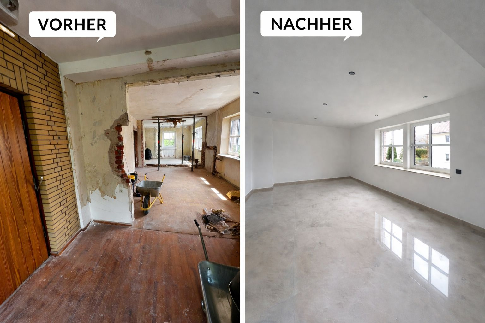
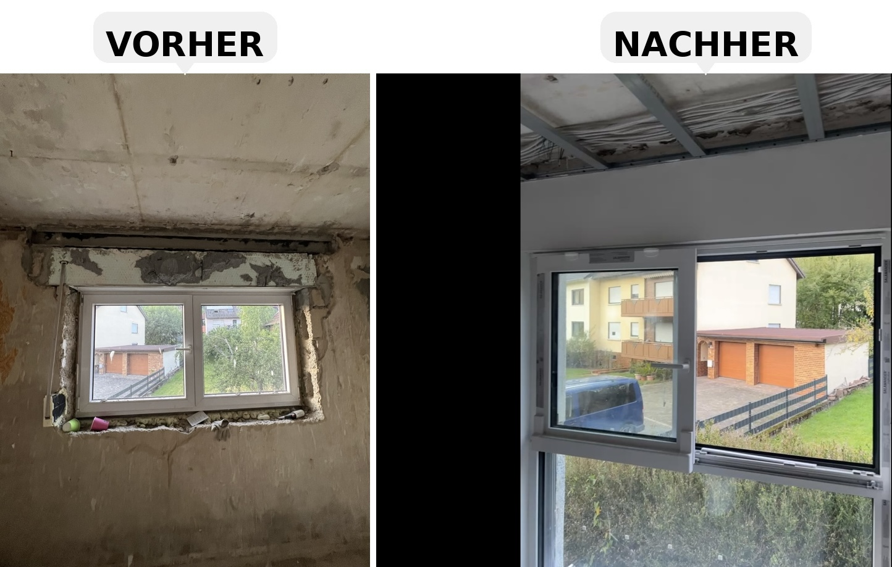

Trockenbau & Raumstruktur
Beispiel für vorbereitende und ausführende Arbeiten im Innenausbau mit Fokus auf saubere Umsetzung.

CU MainWerk ist Ihr zuverlässiger Partner für den gesamten Innenausbau – von Trockenbau über Bodenbeläge bis hin zu Fenstern, Montagearbeiten und vielem mehr. Wir stehen für saubere Arbeit, direkte Kommunikation und starke Ergebnisse.
CU MainWerk ist Ihr Ansprechpartner für Innenausbau, Trockenbau und Montagearbeiten im Raum Goldbach und Aschaffenburg. Wir begleiten private und gewerbliche Projekte von der Planung bis zur Umsetzung.
Unsere Leistungen umfassen Trockenbau, Bodenverlegung, Montage von Fenstern und Türen sowie vorbereitende Arbeiten wie Kabel- und Leerrohrverlegung. Wir arbeiten zuverlässig, sauber und lösungsorientiert.
Wir sind im Raum Goldbach, Aschaffenburg und Umgebung im Einsatz und unterstützen Bau- und Renovierungsprojekte im Umkreis von etwa 50 km.
Wir verbinden praktische Erfahrung, vielseitige Einsatzbereiche und eine saubere Arbeitsweise zu einer starken Lösung für private und gewerbliche Kunden.
Gemeinsam verfügen wir über mehrere Jahre praktische Berufserfahrung in den Bereichen Innenausbau, Montage, Elektro-Bauunterstützung und allgemeine Bauarbeiten.
Durch verschiedene Schulungen bleiben wir fachlich auf dem neuesten Stand, sind offen für Neues und entwickeln uns kontinuierlich weiter.
Zuverlässig, sauber und kundenorientiert. Wir denken mit, arbeiten lösungsorientiert und liefern starke Ergebnisse zu fairen Preisen.
Unser Schwerpunkt liegt auf vielseitigen Arbeiten im Innenausbau, in der Montage und in baunahen Unterstützungsleistungen.
Von Trockenbau über Bodenbeläge bis hin zu Modernisierungs- und Renovierungsarbeiten: Wir unterstützen Sie zuverlässig bei der Umsetzung Ihrer Räume.
Wir übernehmen Montagearbeiten an verschiedenen Bauelementen wie Fenstern, Türen, Toren und weiteren Komponenten im Aus- und Umbau.
Im Rahmen von Bau- und Ausbauarbeiten unterstützen wir bei der Kabelverlegung, Leerrohrverlegung und vorbereitenden Arbeiten für Smart-Home-Installationen.
Darüber hinaus unterstützen wir bei Garten- und Erdarbeiten, Pflasterarbeiten sowie allgemeinen Hilfs- und Unterstützungsarbeiten im Tiefbauumfeld.
Hier können Sie sich einen Eindruck von typischen Arbeitsbereichen und Projektarten verschaffen.

Beispiel für vorbereitende und ausführende Arbeiten im Innenausbau mit Fokus auf saubere Umsetzung.

Montagearbeiten rund um Bauelemente wie Fenster, Türen oder andere Komponenten im Ausbau.

Beispielhafte Leitungs- und Leerrohrverlegung als vorbereitende Leistung im Bauablauf.

Unterstützende Arbeiten bei der Erneuerung und Modernisierung von Wohn- und Nutzflächen.

Praktische Unterstützung bei Erdarbeiten, Pflasterarbeiten und vorbereitenden Außenarbeiten.

Vielseitige Unterstützungs- und Montagearbeiten bei Umbau, Ausbau und Baufortschritt.
Sie möchten ein Projekt besprechen? Nutzen Sie das Anfrageformular oder schreiben Sie uns direkt per E-Mail.
Ihr zuverlässiger Partner für Innenausbau, Montage, Bauunterstützung und vorbereitende Arbeiten im Großraum Aschaffenburg.
Senden Sie uns Ihre Anfrage direkt über die Website. Wir melden uns schnellstmöglich zurück.
Demirel & Er GbR / CU MainWerk
Gesellschafter:
Ufuk Er
Zafer Can Demirel
Am Wingert 44
63773 Goldbach
Deutschland
E-Mail: mainwerkcu@gmail.com
Verantwortlich für den Inhalt:
Demirel&Er GbR
Die Inhalte unserer Seiten wurden mit größter Sorgfalt erstellt. Für die Richtigkeit, Vollständigkeit und Aktualität der Inhalte können wir jedoch keine Gewähr übernehmen.
Unsere Website enthält Links zu externen Websites Dritter, auf deren Inhalte wir keinen Einfluss haben. Deshalb können wir für diese fremden Inhalte auch keine Gewähr übernehmen.
Der Schutz Ihrer persönlichen Daten ist uns wichtig. Diese Website verarbeitet personenbezogene Daten nur im notwendigen Umfang.
Demirel & Er GbR / CU MainWerk
Am Wingert 44
63773 Goldbach
Deutschland
E-Mail: mainwerkcu@gmail.com
Wenn Sie uns per E-Mail kontaktieren, werden Ihre Angaben zur Bearbeitung der Anfrage gespeichert. Diese Daten geben wir nicht ohne Ihre Einwilligung weiter.
Beim Besuch dieser Website speichert der Hosting-Anbieter automatisch Informationen in sogenannten Server-Logfiles, die Ihr Browser übermittelt.
Sie haben das Recht auf Auskunft, Berichtigung und Löschung Ihrer gespeicherten personenbezogenen Daten, soweit keine gesetzliche Aufbewahrungspflicht besteht.